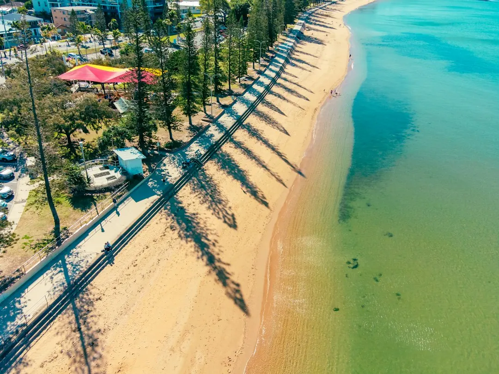

A retaining wall project in Brisbane should begin with the ground being retained, the height change, access, drainage and anything above the wall. Boulder, sandstone, concrete sleeper and timber sleeper systems suit different garden layouts and construction requirements. Replacement work may also include removal, disposal, drainage and garden repairs. Before accepting a proposal, confirm design, approval, construction, inspections, inclusions, exclusions, price and intended start date in writing.
For homeowners comparing retaining walls brisbane options, the practical decision is how the wall will use the garden, manage ground and water, and fit the site access.
Retaining Walls Brisbane Explained
A useful starting point is the project outcome described by Boulder Walls Brisbane: a level lawn, a raised garden bed, a replacement for an old wall or a more usable sloping yard. Describe the height change and what you want to do with the space before choosing a material.
Natural boulders can suit a planted garden setting where large stones form part of the design. Sandstone blocks provide either even rows or a rougher stone finish. Concrete sleepers sit between posts, while timber sleepers create a different garden edge that needs the ground, drainage and future care considered.
A terraced garden introduces another planning question. Walls, paths and drainage need to work together, rather than being treated as separate improvements. If the site has an existing wall, explain whether it is leaning, damaged or simply no longer suits the garden layout.
- Describe the level or garden use you want.
- Identify the wall area, higher ground and anything above it.
- Keep established planting, paths, lawns or fences in the initial brief if they matter to the finished space.
Compare materials by the work behind the face
The visible finish is only one part of a retaining wall. Boulder and sandstone options change the appearance of the garden, but the site still needs to be considered for ground, access and drainage. Sleeper systems require attention to posts, connections and the way water is handled behind the wall.
Do not compare proposals using the front face price alone. Ask what excavation, preparation, drainage, transport, construction and restoration work is included. A lower looking material price may not describe the same scope as a proposal that includes removal, disposal or repairs around an old wall.
For concrete sleeper retaining walls, ask how the posts and sleepers are matched to the site. For timber retaining walls, ask how future care has been considered. For sandstone or boulder walls, ask how the stones will be placed and how the finished face relates to the available garden area.
Access, water and approvals belong in the brief
Access can affect how materials reach the work area. A wide street does not prove that there is a clear route behind a house. Steps, narrow gates, turns and overhead obstructions may change the practical construction discussion. Wider photos showing the wall, garden and route from the street are more useful than a close up alone.
Drainage should be discussed before construction. Describe pooling, staining or soil loss you have noticed, then ask what drainage the proposal includes and where water will go. Gaps between stones do not, by themselves, show that drainage is adequate. The wall system, ground and lawful outlet all need to be considered.
Building approval cannot be judged by height alone. Brisbane City Council identifies conditions for work that may not need approval, while loads above the wall, nearby buildings or walls, and pool fencing can also matter. Have a licensed building certifier check the complete proposal before treating it as exempt.
Replacement work needs a wider scope
An old retaining wall can hide parts of the construction that photographs cannot show, including buried footings or drainage. A suitably qualified professional can assess what remains visible and explain what may need further investigation. If rebuilding is proposed, ask how removal and any temporary support will be handled.
Removal and disposal may be substantial parts of a replacement job. The new work may also affect a fence, path, lawn or established planting. List the parts of the garden you want protected, and ask whether repairs or reinstatement are included after construction.
Before work starts, confirm who is responsible for design, approval, construction and any necessary inspections. Request inclusions and exclusions in writing, including access protection and repairs. This gives you a clearer basis for comparing proposals that may describe different amounts of work.
Prepare a useful enquiry and proposal checklist
You do not need to know the final wall system before making an enquiry. Start with the problem, the suburb, the result you want and how the work area can be reached. Approximate dimensions and photos of the wider site help explain the job, although photos cannot replace an assessment of hidden conditions.
- Describe whether you need a new level, a replacement wall or another way to use the yard.
- Show the wall area, higher ground, nearby structures and route from the street.
- Discuss workable materials, access, drainage and whether a site assessment is needed before a firm quote.
- Confirm the price, inclusions, exclusions, responsible parties and intended start arrangements.
Availability, assessment arrangements and quotation details should be confirmed separately. A callback request can include the suburb, wall type under consideration, access concerns, nearby structures and any plans already prepared.
For another angle on the same project type, see this related retaining wall planning guide.
- Describe the change. Explain whether the project creates a new level, replaces an old wall or changes how the yard can be used.
- Show the whole site. Include the wall area, higher ground, nearby structures and the route from the street.
- Discuss workable options. Confirm materials, access, drainage and whether a site assessment is needed before a firm quote.
- Check the proposal. Review the price, inclusions, exclusions, responsibilities and intended start arrangements in writing.
| Project factor | What to describe | What to confirm |
|---|---|---|
| Garden outcome | Level lawn, raised bed, replacement or terraces | How the wall, paths and planting will work together |
| Wall system | Boulder, sandstone, concrete sleeper or timber sleeper | Posts, connections, finish, drainage and future care |
| Site conditions | Height change, access, nearby structures and water observations | Assessment needs, lawful outlet and construction route |
| Replacement scope | Existing wall, garden elements and desired protection | Removal, disposal, repairs and temporary support |
Common questions
Does a retaining wall need drainage? Water behind the wall needs to be considered in the design. Ask what drainage the quote includes and where the water will go, because the wall system, ground and lawful outlet all matter.
Can an existing retaining wall be assessed? Yes, a suitably qualified professional can check the wall and explain what remains hidden. Photos help begin the discussion but cannot show buried footings or drainage.
When might building approval be needed? Height is only one consideration. Loads above the wall, nearby buildings or walls and pool fencing can also matter, so a licensed building certifier should check the full proposal.
What should a replacement quote include? Ask whether removal and disposal, drainage, access protection, garden repairs and any temporary support are included, then confirm design, approval, construction and inspections.
This guide covers material choices, drainage, access, approval questions, replacement scope and quote preparation for retaining wall projects in Brisbane.